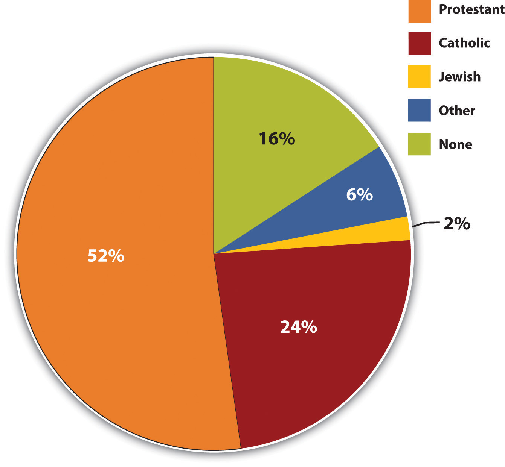
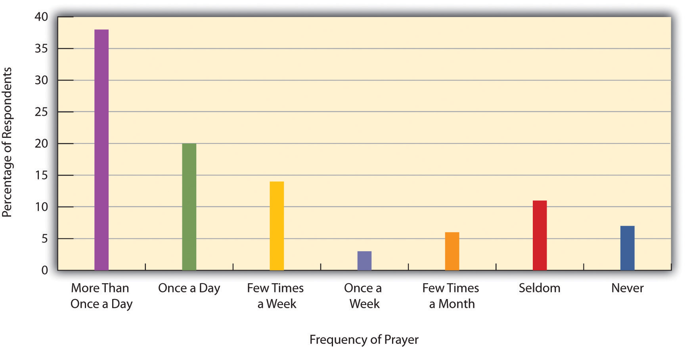

The United States is generally regarded as a fairly religious nation. In a 2009 survey administered by the Gallup Organization to 114 nations, 65% of Americans answered yes when asked, “Is religion an important part of your daily life?” (Crabtree, 2010).Crabtree, S. (2010). Religiosity highest in world’s poorest nations. Retrieved from http://www.gallup.com/poll/142727/religiosity-highest-world-poorest-nations.aspx In a 2007 Pew Forum on Religion & Public Life survey, about 83% of Americans expressed a religious preference, 61% were official members of a local house of worship, and 39% attended religious services at least weekly (Pew Forum on Religion & Public Life, 2008).Pew Forum on Religion & Public Life. (2008). U.S. religious landscape survey. Washington, DC: Pew Research Center. These figures show that religion plays a significant role in the lives of many Americans.
Moreover, Americans seem more religious than the citizens of almost all the other democratic, industrialized nations with which the United States is commonly compared. Evidence for this conclusion comes from the 2009 Gallup survey mentioned in the preceding paragraph. Whereas 65% of Americans said religion was an important part of their daily lives, comparable percentages from other democratic, industrialized nations included the following: Spain, 49%; Canada, 42%; France, 30%; United Kingdom, 27%; and Sweden, 17% (Crabtree, 2010).Crabtree, S. (2010). Religiosity highest in world’s poorest nations. Retrieved from http://www.gallup.com/poll/142727/religiosity-highest-world-poorest-nations.aspx Among its peer nations, then, the United States stands out for being religious.
When we consider all the nations of the world, however, the U.S. ranking is much lower. In more than half the nations surveyed by Gallup in 2009, at least 84% of respondents said religion was an important part of their daily lives. The U.S. rate of 65% ranked 85th out of the 114 nations in this survey (Crabtree, 2010).Crabtree, S. (2010). Religiosity highest in world’s poorest nations. Retrieved from http://www.gallup.com/poll/142727/religiosity-highest-world-poorest-nations.aspx However, because the United States ranks higher than most of the democratic, industrialized nations with which it is most aptly compared, it makes sense to regard the United States as fairly religious. The “Learning From Other Societies” box discusses what else can be learned from the international comparisons in the Gallup survey.
Poverty and the Importance of Religion
The 2009 Gallup international survey on religion discussed in the text revealed an interesting pattern that is relevant for understanding religious differences among the 50 states of the United States.
Of the 114 nations included in the Gallup survey, people in the poorest nations were most likely to say that religion was an important part of their daily lives, and people in the richest nations were least likely to feel this way. The 10 most religious nations according to this measure, with at least 98% of their populations saying that religion was an important part of their daily lives, all had a per-capita gross domestic product (GDP) below $5,000: Bangladesh, Niger, Yemen, Indonesia, Malawi, Sri Lanka, Somaliland region, Djibouti, Mauritania, and Burundi. In contrast, among the 10 least religious nations, with 30% or fewer saying religion was important, were some of the world’s wealthiest nations: Sweden, Denmark, Japan, Hong Kong, the United Kingdom, and France. In the world’s poorest nations, those whose per-capita GDP is below $2,000, the median proportion whose citizens are religious according to the Gallup measure was 95%; in the richest nations, those whose per-capita GDP is above $25,000, the same median proportion was only 47%.
A Gallup report concluded that these results demonstrate “the strong relationship between a country’s socioeconomic status and the religiosity of its residents” (Crabtree, 2010).Crabtree, S. (2010). Religiosity highest in world’s poorest nations. Retrieved from http://www.gallup.com/poll/142727/religiosity-highest-world-poorest-nations.aspx Drawing on research by sociologists and other social scientists, the report explained that religion helps people in poorer nations cope with the many hardships that poverty creates.
Gallup’s international findings and explanation for the poverty-religiosity relationship pattern they exhibited helps explain differences among the 50 states in the United States. In 2008, Gallup conducted surveys in each state in which respondents were asked whether religion was an important part of their daily lives. The 11 highest ranking states, with at least 74% of their populations saying that religion was an important part of their daily lives, were all Southern states. Mississippi ranked highest at 85%.
There are many reasons for the high degree of Southern religiosity, and a Gallup report noted that the states differ in their religious traditions, denominations, and racial and ethnic compositions (Newport, 2009).Newport, F. (2009). State of the states: Importance of religion. Retrieved from http://www.gallup.com/poll/114022/state-states-importance-religion.aspx Although these and other factors might help explain Southern religiosity, it is notable that the Southern states are also generally the poorest in the nation. If the poorest nations of the world are more religious in part because of their poverty, then the Southern states may also be more religious partly because of their poverty. In understanding religious differences among the different regions of the country, the United States has much to learn from the other nations of the world.
Religious affiliationActual membership in a church or synagogue, or just a stated identification with a particular religion whether or not someone actually belongs to a local house of worship. is a term that can mean actual membership in a church or synagogue, or just a stated identification with a particular religion whether or not someone actually belongs to a local house of worship. Another term for religious affiliation is religious preferenceA synonym for religious affiliation.. Recall from the Pew survey cited earlier that 83% of Americans express a religious preference, while 61% are official members of a local house of worship. As these figures indicate, more people identify with a religion than actually belong to it.
The Pew survey also included some excellent data on religious identification (see Figure 17.1 "Religious Preference in the United States"). Slightly more than half of Americans say their religious preference is Protestant, while about 24% call themselves Catholic. Almost 2% say they are Jewish, while 6% state another religious preference and 16% say they have no religious preference. Although Protestants are thus a majority of the country, the Protestant religion includes several denominations. About 34% of Protestants are Baptists; 12% are Methodists; 9% are Lutherans; 9% are Pentecostals; 5% are Presbyterians; and 3% are Episcopalians. The remainder identify with other Protestant denominations or say their faith is nondenominational. Based on their religious beliefs, Episcopalians, Presbyterians, and Congregationalists are typically grouped together as Liberal Protestants; Methodists, Lutherans, and a few other denominations as Moderate Protestants; and Baptists, Seventh-Day Adventists, and many other denominations as Conservative Protestants.
Figure 17.1 Religious Preference in the United States
Source: Data from Pew Forum on Religion & Public Life. (2008). U.S. religious landscape survey. Washington, DC: Pew Research Center.
The religious affiliations just listed differ widely in the nature of their religious belief and practice, but they also differ in demographic variables of interest to sociologists (Finke & Stark, 2005).Finke, R., & Stark, R. (2005). The churching of America: Winners and losers in our religious economy (2nd ed.). New Brunswick, NJ: Rutgers University Press. For example, Liberal Protestants tend to live in the Northeast and to be well educated and relatively wealthy, while Conservative Protestants tend to live in the South and to be less educated and working-class. In their education and incomes, Catholics and Moderate Protestants fall in between these two groups. Like Liberal Protestants, Jews also tend to be well educated and relatively wealthy.
Race and ethnicity are also related to religious affiliation. African Americans are overwhelmingly Protestant, usually Conservative Protestants (Baptists), while Latinos are primarily Catholic. Asian Americans and Native Americans tend to hold religious preferences other than Protestant, Catholic, or Jewish.
Age is yet another factor related to religious affiliation, as older people are more likely than younger people to belong to a church or synagogue. As young people marry and “put roots down,” their religious affiliation increases, partly because many wish to expose their children to a religious education. In the Pew survey, 25% of people aged 18–29 expressed no religious preference, compared to only 8% of those 70 or older.
People can belong to a church, synagogue, or mosque or claim a religious preference, but that does not necessarily mean they are very religious. For this reason, sociologists consider religiosityThe significance of religion in a person’s life., or the significance of religion in a person’s life, an important topic of investigation.
Religiosity has a simple definition but actually is a very complex topic. What if someone prays every day but does not attend religious services? What if someone attends religious services but never prays at home and does not claim to be very religious? Someone can pray and read a book of scriptures daily, while someone else can read a book of scriptures daily but pray only sometimes. As these possibilities indicate, a person can be religious in some ways but not in other ways.
For this reason, religiosity is best conceived of as a concept involving several dimensions: experiential, ritualistic, ideological, intellectual, and consequential (Stark & Glock, 1968).Stark, R., & Glock, C. Y. (1968). Patterns of religious commitment. Berkeley: University of California Press. Experiential religiosity refers to how important people consider religion to be in their lives and is the dimension used by the international Gallup Poll discussed earlier. Ritualistic religiosity refers to the extent of their involvement in prayer, reading a book of scriptures, and attendance at a house of worship. Ideological religiosity involves the degree to which people accept religious doctrine and includes the nature of their belief in a deity, while intellectual religiosity concerns the extent of their knowledge of their religion’s history and teachings. Finally, consequential religiosity refers to the extent to which religion affects their daily behavior.
National data on prayer are perhaps especially interesting (see Figure 17.2 "Frequency of Prayer"), as prayer occurs both with others and by oneself. Almost 60% of Americans say they pray at least once daily outside religious services, and only 7% say they never pray (Pew Forum on Religion & Public Life, 2008).Pew Forum on Religion & Public Life. (2008). U.S. religious landscape survey. Washington, DC: Pew Research Center. Women are more likely than men to pray daily: 66% of women say they pray daily, versus only 49% of men. Daily praying is also more common among older people than younger people, among African Americans than whites, and among people without a college degree than those with a college degree. As these demographic differences indicate, the social backgrounds of Americans affect this important dimension of their religiosity.
Figure 17.2 Frequency of Prayer
Source: Data from Pew Forum on Religion & Public Life. (2008). U.S. religious landscape survey. Washington, DC: Pew Research Center.
When we try to determine why some people are more religious than others, we are treating religiosity as a dependent variable. But religiosity itself can also be an independent variable, as it affects attitudes on a wide range of social, political, and moral issues. Generally speaking, the more religious people are, the more conservative their attitudes in these areas (Adamczyk & Pitt, 2009).Adamczyk, A., & Pitt, C. (2009). Shaping attitudes about homosexuality: The role of religion and cultural context. Social Science Research, 38(2), 338–351. An example of this relationship appears in Table 17.2 "Frequency of Prayer and Belief That Homosexual Sex Is “Always Wrong”", which shows that people who pray daily are much more opposed to homosexual sex. The relationship in the table once again provides clear evidence of the sociological perspective’s emphasis on the importance of social backgrounds for attitudes.
Table 17.2 Frequency of Prayer and Belief That Homosexual Sex Is “Always Wrong”
| Several times a day | Once a day | Several times a week | Once a week | Less than once a week | Never | |
|---|---|---|---|---|---|---|
| Percentage saying “always wrong” | 74.3 | 57.4 | 44.9 | 44.0 | 29.1 | 26.4 |
Source: Data from General Social Survey, 2008.
While religiosity can affect attitudes on various issues, it can also affect behavior and health. The “Sociology Making a Difference” box discusses the effects that religiosity may have.
The Benefits of Religiosity
As discussed earlier, Durkheim considered religion a moral force for socialization and social bonding. Building on this insight, sociologists and other scholars have thought that religiosity might reduce participation in “deviant” behaviors such as drinking, illegal drug use, delinquency, and certain forms of sexual behavior. A growing body of research, almost all of it on adolescents, finds that this is indeed the case. Holding other factors constant, more religious adolescents are less likely than other adolescents to drink and take drugs, to commit various kinds of delinquency, to have sex during early adolescence or at all, and to have sex frequently if they do start having sex (Regenerus, 2007).Regenerus, M. D. (2007). Forbidden fruit: Sex & religion in the lives of American teenagers. New York, NY: Oxford Univeristy Press.
There is much less research on whether this relationship continues to hold true during adulthood. If religion might have more of an impact during adolescence, an impressionable period of one’s life, then the relationship found during adolescence may not persist into adulthood. However, two recent studies did find that more religious, unmarried adults were less likely than other unmarried adults to have premarital sex partners (Barkan, 2006; Uecker, 2008).Barkan, S. E. (2006). Religiosity and premarital sex during adulthood. Journal for the Scientific Study of Religion, 45, 407–417; Uecker, J. E. (2008). Religion, pledging, and the premarital sexual behavior of married young adults. Journal of Marriage and Family, 70(3), 728–744. These results suggest that religiosity may indeed continue to affect sexual behavior and perhaps other behaviors during adulthood.
Sociologists and other scholars have also built on Durkheim’s insights to assess whether religious involvement promotes better physical health and psychological well-being. As the earlier discussion of religion’s functions noted, a growing body of research finds that various measures of religious involvement, but perhaps especially attendance at religious services, are positively associated with better physical and mental health. Religious involvement is linked in many studies to lower rates of cardiovascular disease, hypertension (high blood pressure), and mortality (Ellison & Hummer, 2010; Green & Elliott, 2010).Ellison, C. G., & Hummer, R. A. (Eds.). (2010). Religion, families, and health: Population-based research in the United States. New Brunswick, NJ: Rutgers University Press; Green, M., & Elliott, M. (2010). Religion, health, and psychological well-being. Journal of Religion & Health, 49(2), 149–163. doi:10.1007/s10943-009-9242-1 It is also linked to higher rates of happiness and lower rates of depression and anxiety.
These effects are thought to stem from several reasons. First, religious attendance increases social ties that provide emotional and practical support when someone has various problems and that also raise one’s self-esteem. Second, personal religious belief can provide spiritual comfort in times of trouble. Third, and as noted in the preceding section, religious involvement promotes healthy lifestyles for at least some people, including lower use of tobacco, alcohol, and other drugs, and reduces the frequency of other risky behaviors such as gambling and unsafe sex. Lower participation in all of these activities helps in turn to increase one’s physical and mental health.
In sum, research increasingly suggests that religiosity helps reduce risky, deviant behaviors and increase physical and psychological well-being. Although religion should not be forced on anyone, this body of research suggests that efforts that promote religiosity among both adolescents and adults may have the benefits just described. For example, older adults often have trouble traveling to a house of worship, whether they live at home or in an institutional setting such as a nursing home or assisted living center. Their well-being may be enhanced if they are provided free or low-cost transportation to attend a house of worship or if regular religious services are begun in the institutional settings that do not already have them. In helping demonstrate the benefits of religiosity in the areas discussed here, sociology has again made a difference.
Although the United States is a fairly religious nation, Americans “are also deeply ignorant about religion,” according to a recent news report (Goodstein, 2010, p. A17).Goodstein, L. (2010, September 28). Basic religion test stumps many Americans. The New York Times, p. A17. The report was based on a 2010 survey by the Pew Forum on Religion & Public Life of more than 3,400 U.S. residents. The survey respondents were asked 32 questions, mostly multiple-choice, about the Bible, the world’s major religions, celebrated religious figures from various points in world history, and what U.S. Supreme Court rulings permit in the public practice of religion. Among other questions, respondents were asked what Ramadan is, where Jesus was born, who led the exodus out of Egypt in the Bible, and whose writings started the Protestant Reformation; they were also asked to identify the religious preference of the Dalai Lama, Joseph Smith, and Mother Teresa.
The average respondent provided correct answers to only half the questions. Researchers considered most of the questions to be fairly easy, but a few of the questions were fairly difficult.
For example, whereas 89% of respondents knew that teachers in public schools may not lead a class in prayer and 71% knew that Jesus was born in Bethlehem, only 54% knew that the Koran is the Islamic holy book, only 45% knew that the Jewish Sabbath begins on Friday, and only 23% knew that teachers in public schools are allowed to read from the Bible as an example of literature.
The respondents’ level of education was strongly related to their percentage of correct answers. College graduates answered an average of 20.6 questions correctly, people who had taken only some college courses answered 17.5 questions correctly, and respondents with a high school degree or less answered 12.8 questions correctly. Higher scores were also achieved by respondents who were more religious, by men, by whites, and by non-Southerners (Pew Forum on Religion & Public Life, 2010).Pew Forum on Religion & Public Life. (2010, September 28). U.S. religious knowledge survey. Retrieved from http://www.pewforum.org/Other-Beliefs-and-Practices/U-S-Religious-Knowledge-Survey.aspx
During the last decade, the Higher Education Research Institute (HERI) at the University of California, Los Angeles, conducted a national longitudinal survey of college students’ religiosity and religious beliefs (Astin, Astin, & Lindholm, 2010).Astin, A. W., Astin, H. S., & Lindholm, J. A. (2010). Cultivating the spirit: How college can enhance students’ inner lives. Hoboken NJ: Jossey-Bass. They interviewed more than 112,000 entering students in 2004 and more than 14,000 of these students in spring 2007 toward the end of their junior year. This research design enabled the researchers to assess whether and how various aspects of religious belief and religiosity change during college. Several findings were notable.
First, religious commitment (measures of the students’ assessment of how important religion is to them) stayed fairly stable during college. Students who drank alcohol and partied the most were more likely to experience a decline in religious commitment, although a cause-and-effect relationship here is difficult to determine.
Second, religious engagement (measures of religious services attendance, praying, religious singing, and reading sacred texts) declined during the college years. This decline was especially steep for religious attendance. Almost 40% of juniors reported less frequent attendance than during their high school years, while only 7% reported more frequent attendance.
Third, religious skepticism (measures of how well religion explains various phenomena compared to science) stayed fairly stable. Skepticism tended to rise among students who partied a lot, went on a study-abroad program, and attended a college with students who were very liberal politically.
Fourth, religious/social conservatism (views on such things as abortion, casual sex, and atheism) tended to decline during college, although the decline was not at all steep. This set of findings is in line with the research discussed earlier showing that students tend to become more liberal during their college years. To the extent students’ views became more liberal, the beliefs of their friends among the student body mattered much more than the beliefs of their faculty.
Fifth, religious struggle (measures of questioning one’s religious beliefs, disagreeing with parents about religion, feeling distant from God, and the like) tended to increase during college. This increase was especially high at campuses where a higher proportion of students were experiencing religious struggle when they entered college. Students who drank alcohol and watched television more often and who had a close friend or family member die were more likely to experience religious struggle, although a cause-and-effect relationship is again difficult to determine.